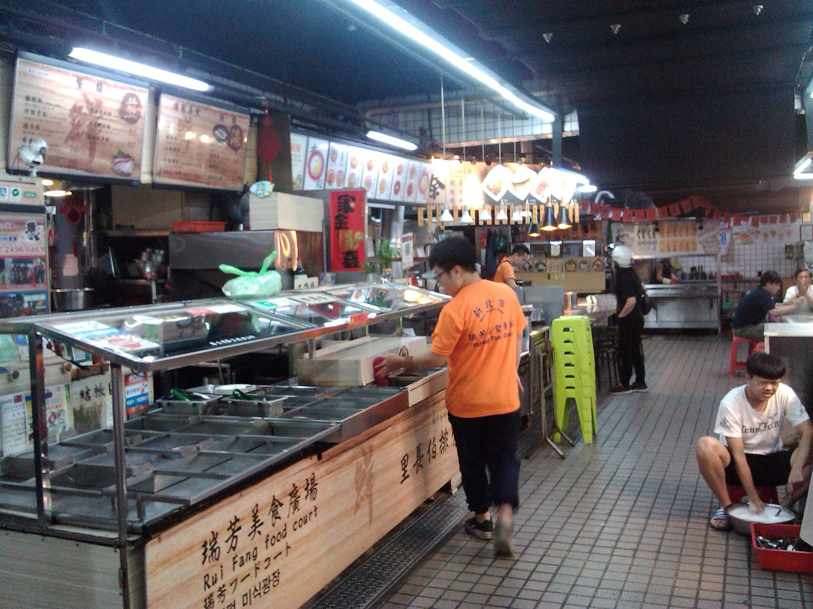
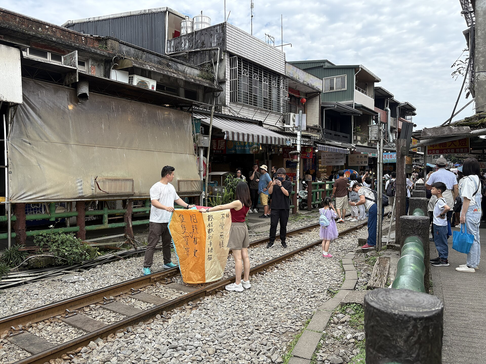
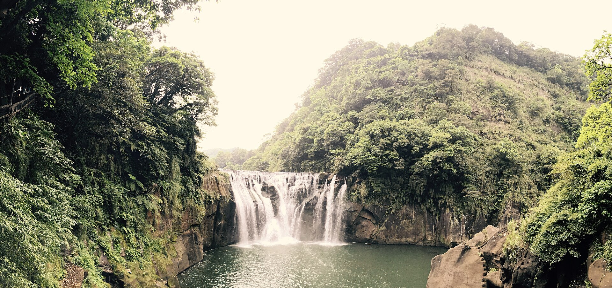
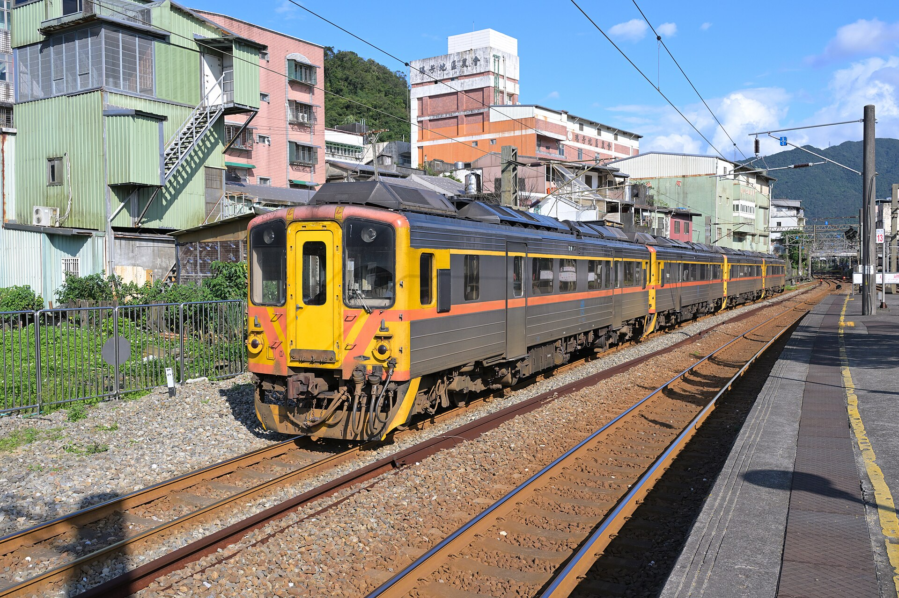
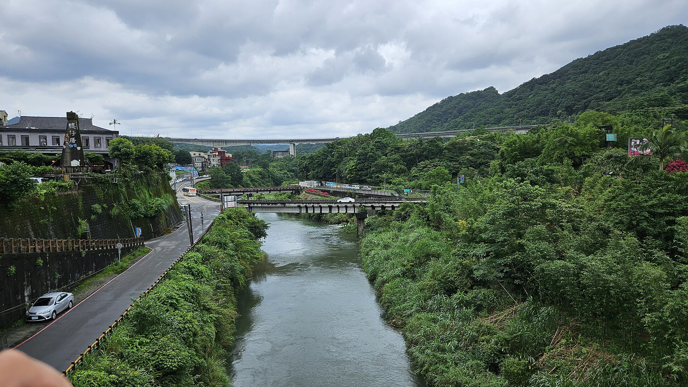

08:30 出發，轉乘至臺北車站後搭 09:20 臺鐵。
DAY AT A GLANCE
先看整日行程，再決定在哪裡多停一下
先掌握移動骨架；各站的吃法、散步細節與照片都放在後面。17:30 左右抵達南勢角是理想方向，不是要犧牲行程的硬性截止。
美食廣場用餐、回月台，搭平溪線前往十分。
老街、河谷步道與瀑布；14:40 為首選回程班次。
新村芳書院、保雲芋圓；先以 16:09 回臺北為佳，想多留可改晚一班。
彈性原則
班車與步道回程要預留緩衝，返家時間則保留彈性。若書院、芋圓或現場氣氛值得多待一會兒，改搭後續班次即可；只要知道回家可能晚於 19:00，不需要為了這個目標倉促結束。

EAT FIRST · RUIFANG FOOD COURT
先在瑞芳，吃一桌在地人的日常
美食廣場就在瑞芳車站前方；這次預留 10:35–11:30。以下不是排行榜，而是從食記與網友回饋中挑出最適合這趟行程的三種口味：一碗主食、一份現煎小吃，再加一個可以分享或帶上車的炭烤點心。
建議 10:35 先找座位，再分頭點餐


外帶加分
林記福州胡椒餅
怎麼點：一到廣場先拿號碼牌；出爐後外帶分享，來不及就帶上平溪線。
網友為什麼推：薄脆的老麵餅皮、炭烤香氣與帶蔥的多汁豬肉餡，是最多人提到的組合。但可能要等：不能把它當作保證即拿的主餐。
看食記與等候提醒 →三張店家／餐點照皆為外部來源頁載入，僅作辨識參考；版權與顯示穩定性依原站，未複製進本行程專案。
TRIP SNAPSHOT
四種風景，一天剛剛好
這趟不是只為了抵達瀑布：瑞芳的市場午餐、百年老屋書院、十分鐵道街景，以及沿河步行到瀑布的過程，都是旅行本身。
旅行節奏
上午吃瑞芳、午間逛老街、午後走瀑布，回程再探百年書院、吃一碗芋圓。先以 14:05 從瀑布往回走為節奏；17:30 左右抵達南勢角是好方向，並非必須死守的時間線。
鐵道旁的老貨運倉庫變成書房、旅宿與地方文化交流空間。
車站對面就能吃到肉羹、麵食、胡椒餅與各式台味小吃。
月台接著老街，店家、天燈與行駛中的鐵道形成十分最有辨識度的風景。
一路經過橋面、基隆河與觀景台，步行本身不只是轉場。
南勢角08:30 捷運
臺北09:20 臺鐵
瑞芳午餐＋百年書院
十分老街＋瀑布
南勢角約 17:30 返回為佳
WHY THIS TRIP
這趟旅行好玩在哪裡
四種停留各有不同氣氛：先從熱鬧的小吃開始，走進貼著鐵道生長的街區，把步調放慢到河谷與瀑布，最後用一座老書院收尾。
瑞芳｜先吃一輪在地日常
瑞芳美食廣場就在車站前，像一座濃縮的小吃市場。不必排同一家名店，每個人可以選自己想吃的，再一起分享。
- 肉羹、麵食、胡椒餅、蚵仔煎都有機會找到
- 先繞一圈再點餐，比一進門就決定更有趣
- 留意份量，十分老街還能再補一份甜點或小吃

十分老街｜街屋沿著鐵道展開
十分最迷人的不是單一店家，而是火車、街屋與遊客活動共存在很窄的空間裡。列車慢慢進站時，整條街會短暫改變節奏。
- 從安全位置看列車貼著店家通過
- 天燈可寫下旅行願望，也可以只欣賞街景
- 月台、鐵橋與老街轉角都很適合拍照

十分瀑布｜先走河谷，再遇見水幕
從車站到瀑布的二十多分鐘，不只是趕路。沿途經過橋面、基隆河與綠意，最後才從不同高度看見寬闊的瀑布水幕。
- 主景觀台能完整看見瀑布正面與水氣
- 橋梁與河谷讓抵達前的步行也有變化
- 雨後水量較有氣勢，晴天則更適合慢慢拍照

新村芳書院｜鐵道旁的百年貨運行
老貨運倉庫經過修繕後，成為息書房、旅宿與地方交流空間。巷弄、書牆、植栽與瓶燈，把瑞芳的舊故事收進很安靜的一角。
- 從瑞芳車站後站步行約 2–4 分鐘
- 先看巷弄與老屋細節，現場開放才入內
- 目前沒有可信的固定開放時間，行前可先聯絡確認
SHIFEN ON FOOT
從鐵道老街，散步走進河谷
十分站一出站就是老街，沿著街屋往遊客中心方向走，城市感會慢慢退去，接著遇見四廣潭橋、觀瀑吊橋、基隆河與瀑布公園。這段路的魅力，是風景一層一層展開。
- 老街：先感受火車進站時整條街暫停又恢復的節奏。
- 橋與河：經過不同高度的橋面，沿途能看到河谷與山壁變化。
- 瀑布：主景觀台看全景，其他角度則能感受水氣與落差。
- 玩法：天燈是選配；喜歡散步與拍照，也能有完整體驗。
DETAILED TIMELINE
詳細時間表
每個主要停留都附上實景照片。體驗依序是瑞芳午餐、十分老街、河谷步道、十分瀑布、新村芳書院與保雲芋圓；回家時間以順暢為目標，保留彈性。
南勢角站集合，08:30 出發
在 O01 南勢角站閘門內集合。搭中和新蘆線，於東門轉紅線到台北車站；下車後立即依「臺鐵」指標步行，目標 09:05 前到月台。


新村芳書院｜在百年老屋慢下來
從瑞芳車站後站步行約 2–4 分鐘，到瑞芳街 37 號看由老貨運倉庫轉身而成的書院。先欣賞巷弄、植栽與老屋門面；若當天開放，再入內看書牆與藝文空間。接著沿瑞芳老街往保雲芋圓，讓後站散步有一個甜的收尾。
步行導航保雲芋圓｜瑞芳老街的甜點收尾
從書院繼續走到瑞芳街 8 號，點一碗芋圓冰；若天氣轉涼，也可依現場品項改選熱甜點。這裡離瑞芳後站不遠，16:09 是順利時的首選車；想慢慢吃、再逛巷弄，就改搭後續班次。
瑞芳 → 臺北｜16:09 為首選，晚一班也可以
16:09 出發、17:02 抵達臺北時，約 17:30 可回到南勢角，是最順暢的版本。書院或芋圓想多停一下時，不必趕這班；改搭當日可用的後續班次，接受回家可能晚於 19:00 即可。
FLEXIBLE TRAINS
班次工具箱｜需要時再看
平常照主行程走就好；只有提早出門、現場想多留，或列車臨時異動時，再回來看這組替代班次。
快速判斷
想要較早回家：臺北最晚搭 10:05、瑞芳最晚搭 11:55 去十分，並以十分 14:40 回瑞芳、瑞芳 16:09 回臺北為優先。想多待一會兒時，後續班次仍是可選的回程方案。
臺北 → 瑞芳
- 09:11 → 09:43｜214 次自強號需劃位；若 08:30 才離開南勢角，轉乘太趕，不建議當主方案。
- 09:20 → 10:28｜4162 次區間車推薦主班次。08:30 從南勢角出發，有較合理的找月台緩衝。
- 10:05 → 10:44｜4026 次區間快可用晚班備案；抵達後午餐需壓在約 45 分鐘，仍要搭 11:55 平溪線。
瑞芳 → 十分
- 10:55 → 11:22｜4818 次區間車若改成先玩十分、回瑞芳再吃飯可選；不符合原本先在瑞芳用餐的順序。
- 11:55 → 12:22｜4822 次區間車推薦主班次，週末及假日行駛；可兼顧瑞芳早午餐與十分行程。
- 13:00 → 13:27｜4824 次區間車晚班備案；無法完整走老街加瀑布並穩定趕上 14:40 回程。
十分 → 瑞芳
- 14:40 → 15:12｜4825 次區間車首選回程；可從容安排新村芳書院與保雲芋圓，再選 16:09 回臺北。
- 15:35 → 16:04｜4827 次區間車晚班備案；抵達瑞芳後不必硬轉 16:09，可改搭當日後續臺鐵班次，代價是返家較晚。
瑞芳 → 臺北
- 16:09 → 17:02｜1223 次區間車最順暢的主班次；約 17:30 回南勢角，返家前還有約 30 分鐘緩衝。
- 16:48 → 17:43｜4191 次區間車從容備案；約 18:10 回南勢角，若返家路程約 30 分鐘，仍有機會在 19:00 前到家。
- 16:55 → 17:35｜277 次自強號需劃位；回到南勢角約 18:00，適合願意壓縮返家緩衝、換取書院或芋圓停留的人。
- 17:26 → 18:18｜4193 次區間車晚回備案；適合決定延長遊玩時使用，返家可能落在 19:00 之後。
PLAN B
臨時變動，也保留旅行感
不用一路擔心錯過什麼。真的遇到延誤、下雨或特別喜歡某個地方時，再用這裡決定要把時間留給哪一種體驗。
想在某一站多留一點
- 偏愛老街氣氛把時間留給天燈、鐵道街景與小吃；瀑布改看主景觀台即可。
- 偏愛自然風景老街買一份點心就出發，讓橋梁、河谷與瀑布成為旅行主角。
- 偏愛老屋人文維持 14:40 回瑞芳，將 15:20 後完整留給新村芳書院、後站巷弄與保雲芋圓。
- 瑞芳吃得正開心仍以 11:55 平溪線為主；真的錯過時，可留在瑞芳散步，不必硬塞全部景點。
遇到延誤或天氣變化
- 雨勢不大老街仍可逛，瀑布步道放慢速度；橋面與階梯濕滑時不勉強趕路。
- 大雨或園區異動把重點改成瑞芳美食與十分老街，依官方公告決定是否走瀑布。
- 書院當天未開放仍可欣賞百年老屋外觀與後站巷弄，接著到保雲芋圓；有更多時間坐下吃甜點也沒關係。
- 需要晚一班回程十分 15:35 到瑞芳 16:04 後，改搭當日後續往臺北的班次；到家可能晚於 19:00，但不必為了守住時間而壓縮行程。
BUDGET & PACKING
費用與行前準備
以下為成人單程票面價加總，不含電子票證優惠、TPASS、餐飲與天燈費用。
每人基本交通
| 交通 | 來回 |
|---|---|
| 南勢角 ↔ 台北車站（捷運） | NT$50 |
| 臺北 ↔ 瑞芳（臺鐵） | NT$146 |
| 瑞芳 ↔ 十分（臺鐵） | NT$58 |
| 交通合計 | 約 NT$254 |
背包裡放這些
- 悠遊卡／一卡通先加值至少 NT$300，進出捷運與臺鐵比較省事。
- 水、防曬、帽子預報偏熱，步行區有曝曬路段。
- 摺傘或輕便雨衣山區天氣變化快，瀑布周邊也較濕。
- 防滑好走的鞋老街碎石、橋面與瀑布步道都比市區路面複雜。
CHECKED 2026.09.23
本次查詢來源
開放時間、列車、天氣都可能變動。這些連結保留給出發前快速重查。